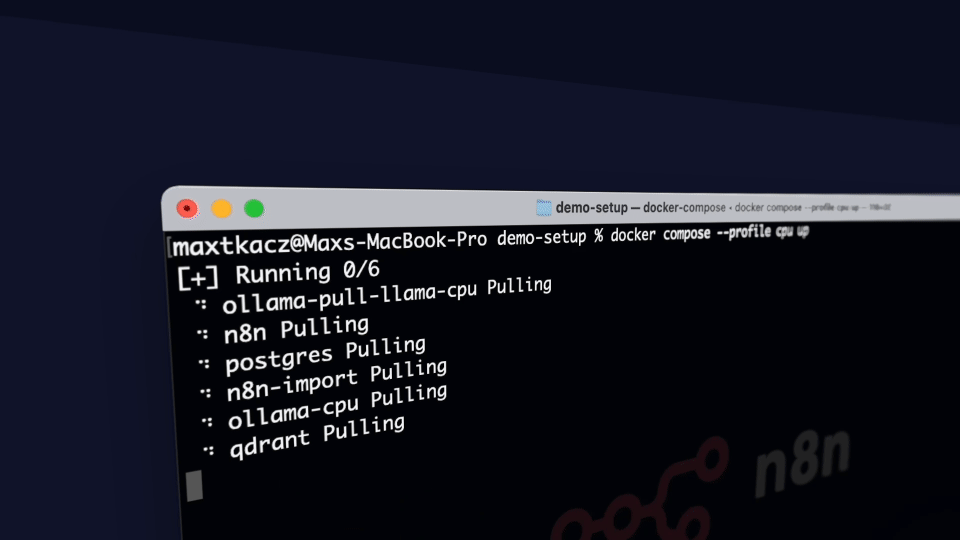
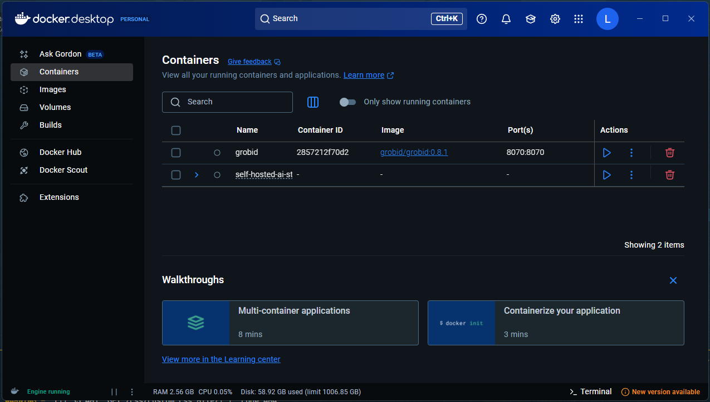
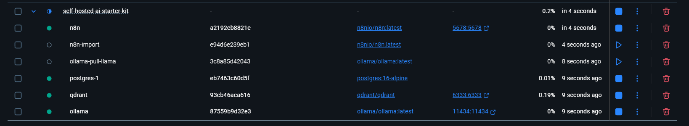
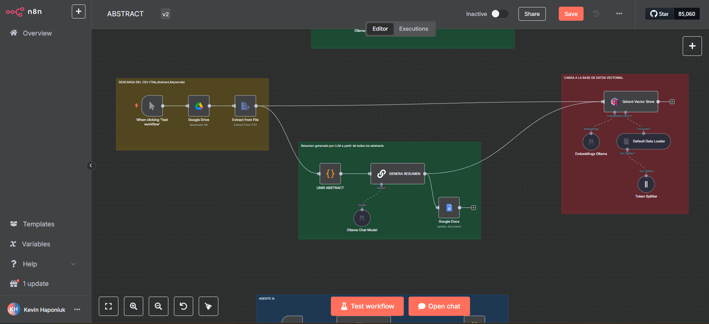
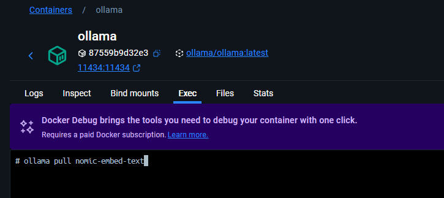
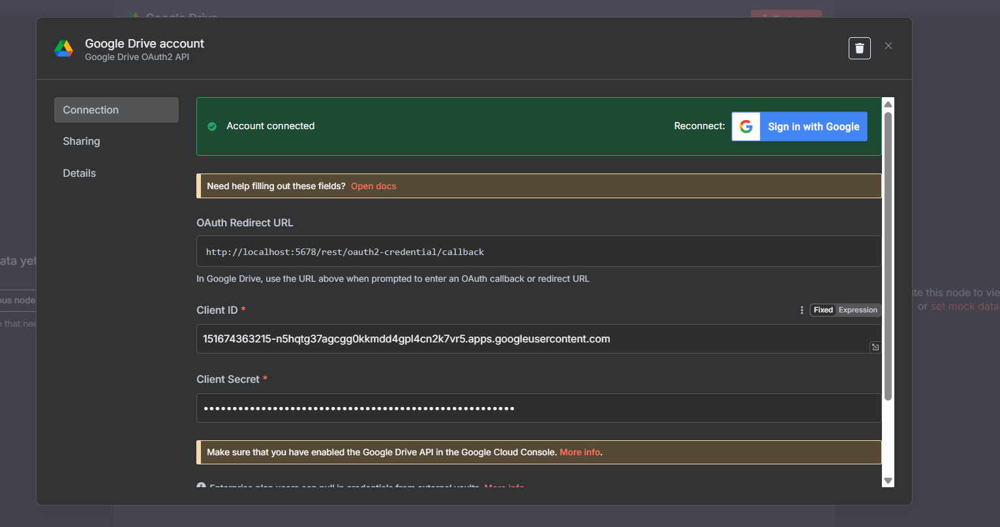

Instalación de n8n con Self-hosted AI Starter Kit

Figura 1: Self-hosted AI Starter Kit
Para instalar n8n en un entorno local, utilizaremos el Self-hosted AI Starter Kit, una plantilla open-source basada en Docker Compose que permite desplegar rápidamente un entorno completo de desarrollo low-code e inteligencia artificial.
¿Qué es el Self-hosted AI Starter Kit?
El Self-hosted AI Starter Kit es un conjunto de herramientas preconfiguradas que facilita la instalación y puesta en marcha de n8n junto a otros servicios útiles para proyectos de automatización e IA. Incluye:
- n8n: Plataforma low-code con más de 400 integraciones y componentes avanzados de IA.
- Ollama: Plataforma para ejecutar modelos de lenguaje (LLM) localmente.
- Qdrant: Vector store de alto rendimiento, ideal para búsquedas semánticas y almacenamiento de embeddings.
- PostgreSQL: Base de datos robusta y ampliamente utilizada en ingeniería de datos.
Pasos de instalación
1. Clonar el repositorio
git clone https://github.com/n8n-io/self-hosted-ai-starter-kit.git
cd self-hosted-ai-starter-kit
2. Ejecutar con Docker Compose
Dependiendo de tu hardware, elige la opción adecuada:
a) Usuarios con GPU Nvidia
docker compose --profile gpu-nvidia up
b) Usuarios con GPU AMD (Linux)
docker compose --profile gpu-amd up
c) Usuarios de Mac / Apple Silicon
Nota: En Mac con procesadores M1 o superiores, no es posible exponer la GPU a Docker. Hay dos alternativas: - Ejecutar todo el entorno en CPU (ver siguiente sección). - Instalar Ollama directamente en tu Mac para inferencia más rápida y conectar n8n a ese servicio.
Para instalar Ollama en Mac, consulta la página oficial de Ollama.
Para levantar el entorno en CPU:
docker compose up
d) Para todos los demás (CPU)
docker compose --profile cpu up
3. Visualización mediante docker desktop
Se utilizará docker desktop para la visualización y ejecución del entorno.

Figura 2: Visualización de docker desktop
donde podremos observar los contenedores que se están ejecutando.

Figura 3: Visualización de contenedores
Una vez que los contenedores estén en ejecución, podrás acceder a la interfaz web de n8n a través de tu navegador utilizando la siguiente URL:
Nota: Asegúrate de que el puerto 5678 no esté siendo utilizado por otra aplicación en tu sistema.
Una vez que inicies sesión, podrás acceder a la interfaz principal de n8n. En la imagen se muestra un ejemplo de un flujo de trabajo configurado. Si has llegado a este punto y puedes ver la interfaz, significa que n8n está correctamente instalado y listo para comenzar a crear tus propios flujos de trabajo.

Figura 4: Interfaz de n8n
Instalaciones / Dependencias necesarias
Instalación de modelos en Ollama
Primero, es necesario instalar las dependencias necesarias para poder ejecutar los ejemplos.
vamos a usar en ollama un modelo de embeddings que se llama nomic-embed-text y un modelo de lenguaje que se llama llama3.1:8b. para instalarlos, debemos buscarlos en la página de ollama.
de esta página, podemos seleccionar la versión que queramos instalar.
ollama pull nomic-embed-text
con este comando vamos a ir al docker desktop y vamos a pegarlo en esta sección "Exec".

Figura 5: Instalación de nomic-embed-text
de manera similar, podemos instalar el modelo de lenguaje llama3.1:8b
ollama pull llama3.1:8b
Credenciales de Google
Para vincular servicios de Google con n8n, necesitamos seguir estos pasos:
-
Primero, necesitamos crear un proyecto en Google Cloud Console y habilitar las APIs que queremos usar:
- Ve a Google Cloud Console
- Crea un nuevo proyecto o selecciona uno existente
- En el menú lateral, ve a "APIs y servicios" > "Biblioteca"
- Busca y habilita las APIs que necesites (por ejemplo, "Google Drive API", "Google Docs API")
-
Crear credenciales OAuth 2.0:
- En el menú lateral, ve a "APIs y servicios" > "Credenciales"
- Haz clic en "Crear credenciales" > "ID de cliente de OAuth"
- Selecciona "Aplicación web" como tipo de aplicación
- Agrega los URIs de redirección autorizados:
http://localhost:5678/rest/oauth2-credential/callback
- Guarda el ID de cliente y el secreto del cliente
-
En n8n:
Para configurar las credenciales de Google, simplemente abre el nodo que necesitas conectar (por ejemplo, si es Google Drive, arrastra el nodo "Google Drive" a tu flujo de trabajo). Luego, haz clic en el nodo y ve a la pestaña "Credenciales". Aquí verás los campos que necesitas completar:
- OAuth Redirect URL:
http://localhost:5678/rest/oauth2-credential/callback - Client ID: El ID de cliente que obtuviste de Google Cloud Console
- Client Secret: El secreto del cliente que obtuviste de Google Cloud Console
Una vez que ingreses estos datos, n8n manejará automáticamente la configuración OAuth2 necesaria para la autenticación.
- OAuth Redirect URL:
-
Una vez configuradas las credenciales, podrás usarlas en tus flujos de trabajo de n8n para interactuar con los servicios de Google.

Figura 6: Credenciales de Google
Nota: Asegúrate de mantener seguras tus credenciales y no compartirlas públicamente. También es importante configurar correctamente los URIs de redirección para que la autenticación funcione correctamente.